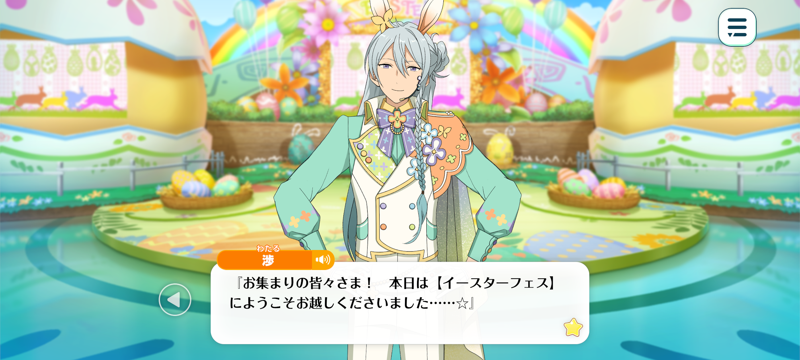
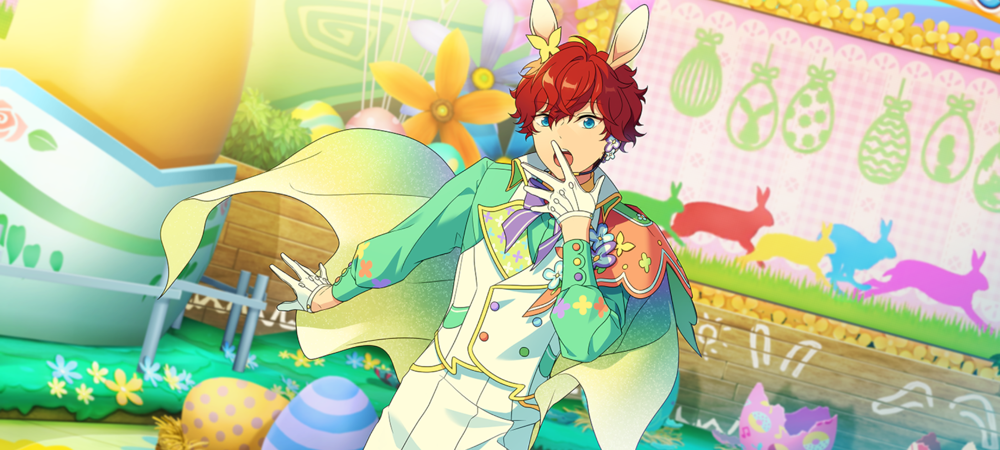
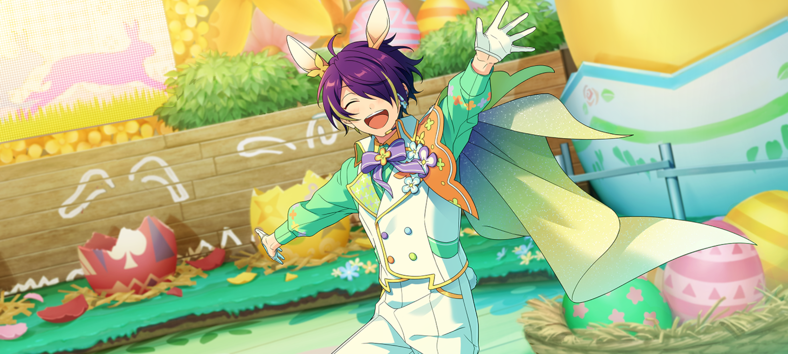
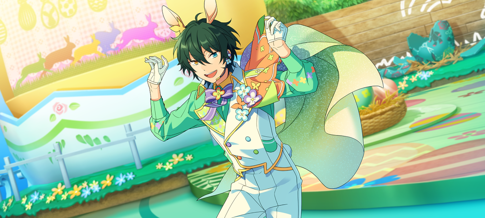
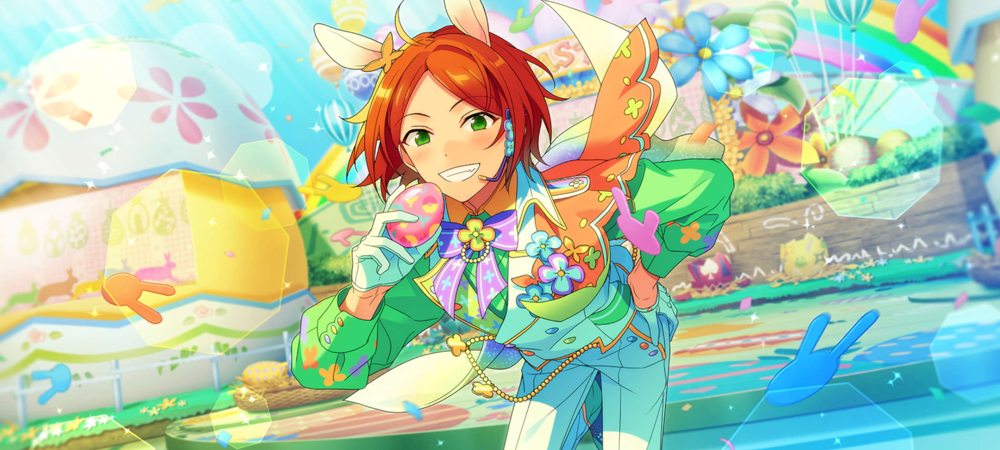
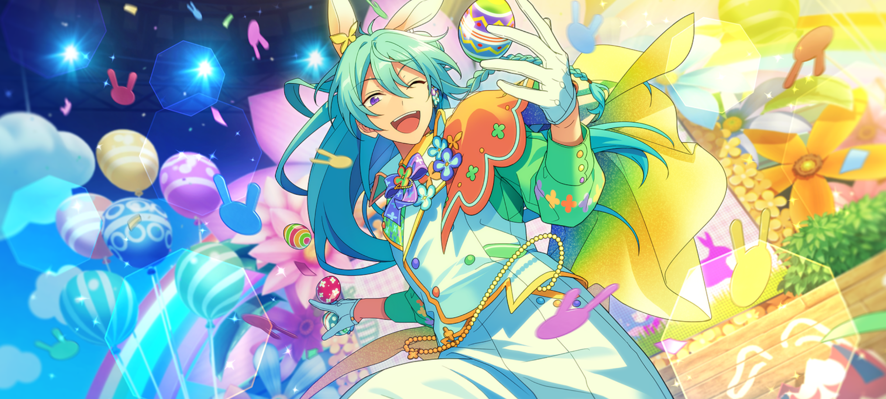
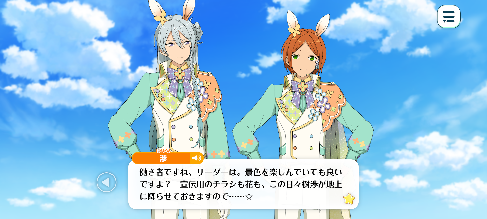

Easter To You
⌒Epilogue⌒


Time: Easter Fes, Opening Ceremony

Wataru: “Ladies and gentlemen! Welcome to this year's Easter Fes...☆”
Hinata: “Kaboom! We're kicking things off with a bang at this opening ceremony, so get ready for a whole lot of energy—!”
Wataru + Hinata: “We’re Puffy ☆ Bunny!”
Hiiro: “The Easter Fes is a festival that runs from today all the way until Easter Day!”
“I'm happy we get to kick things off with such an exciting performance...♪”
Shinobu: “Spring is just around the corner! Until then, come and enjoy yourselves with us! ♪”
Mika: “We're gonna sing and dance to our hearts' content, but first, let's all have the time of our lives! Everyone, follow us~!”

Hiiro: (Is it really okay to have this much fun the moment we step onto the stage? My heart feels like it's going to burst...!)
(Everyone's come here to see us. They looked surprised at first, but then their faces lit up with smiles. They all seem so excited!)
(...This is my first time experiencing Easter traditions. It's such a bright, wonderful festival.)
(I want everyone to have a good time, too. So I'll enjoy myself as much as I can, right up until the very end...!)

Shinobu: (Nihihi~! ♪ As we change our expressions to match each song and its lyrics, I can see the audience's reactions changing along with us!)
(Seeing that makes me so happy! And somehow, my movements feel even sharper, too. My body's so light!)
(I have to keep going! I'll bounce from one end of the stage to the other and bring smiles to everyone's faces! ♪)
(Everyone's smiling, and so are we. In this lovely spring weather, their smiles are blooming like flowers...☆)
Mika: (Ahaha. Hiiro-kun and Shinobu-kun look like they're havin' so much fun.)
(I'm singin' and dancin' however I like. I don't get many chances t'perform on stages like this, so I was a little worried about it...)

(But I'm not worried anymore! I gotta make eye contact with everyone, give 'em high-fives, and go all out! ♪)
(I'm so glad I get t'be part of another Easter event. Just being here makes me happy, too.)
(If we can bring a little happiness to everyone through Easter, that'll be wonderful. That's why I'm gonna give it everything I've got~♪)
Hiiro + Shinobu: “♪♪♪♪♪~... ☆”
Mika: ♪~ ♪~ ☆
Hinata: (What an entrance! Bursting out of an Easter egg, with a cannon and a screen to make it all the more spectacular!)
(Then running and hopping around, getting up close and personal with everyone in the audience!)
(Booyah! ☆ And to think, this is only the beginning of a superrrr fun festival! Isn't that amazing?)

(I'm so glad everyone agreed to join this unit. And I'm so glad we all wanted to do this together!)
(Puffy ☆ Bunny still has plenty of room to grow! ☆ We're gonna make this even better...!)
(So let's keep getting along and giving it our all! Right, Hibiki-senpai? ♪)
Wataru: (Amazing! Rather than the audience, it seems I've become the recipient of Hinata-kun's charming gaze.)
(...Now that I think about it, this is a rather wonderful turn of events. After all that hesitation and uncertainty, here we are, exchanging such innocent glances on stage.)
(Fufufu. Perhaps this has been a rather splendid experience after all...)
(The joy I feel is evident in every movement! I'm enjoying this from the bottom of my heart. I feel truly alive!)
(And I shall keep dancing with all my heart, not just now, but right until the very end of the Easter Fes...)
(The arrival of spring, and everyone gathered here. I shall—no, we shall—make your hearts flutter with the warmth of spring...☆)
Wataru + Hinata: “♪~ ♪~...☆”

“Easter is a celebration of new life. It's a spring festival cherished by people all around the world—”
Hinata: “We hope you'll come to love us just as much as you love Easter!”
Wataru: “The festivities have only just begun. Please enjoy every moment with us until Easter Day arrives...♪”

Hinata: Waaah, we're so high up! So this is the kind of view Hibiki-senpai gets to enjoy all the time...!
I'm so happy I get to be up here at the same height as you. It's almost overwhelming! The breeze feels amazing, too...
...Oops, I’m getting a little too caught up in enjoying myself. We're supposed to be promoting the Easter Fes from this hot-air balloon, aren't we? ♪
Wataru: You're such a diligent leader, aren't you? There's nothing wrong with taking a moment to enjoy the view, you know. As for the promotional flyers and flowers... Leave it to me, Hibiki Wataru! I shall have them rain down upon the world below...☆
Hinata: Hey, let’s go halfsies ♪ That way, I can share the load with you, senpai.
Wataru: Very well… Oya?
Do look down there. There are so many people waving up at us!
Hinata: Ahaha, you're right! I wonder if they're all here for the Easter Fes...
Wataru: I can hear them calling out our names, so I believe that's the case. Shall we shower them with flowers and wave back?
Hinata: Absolutely! Everyone's eagerly awaiting the arrival of spring. It may be a little early, but let's shout down to them—
Hinata + Wataru: HAPPY EASTER…☆